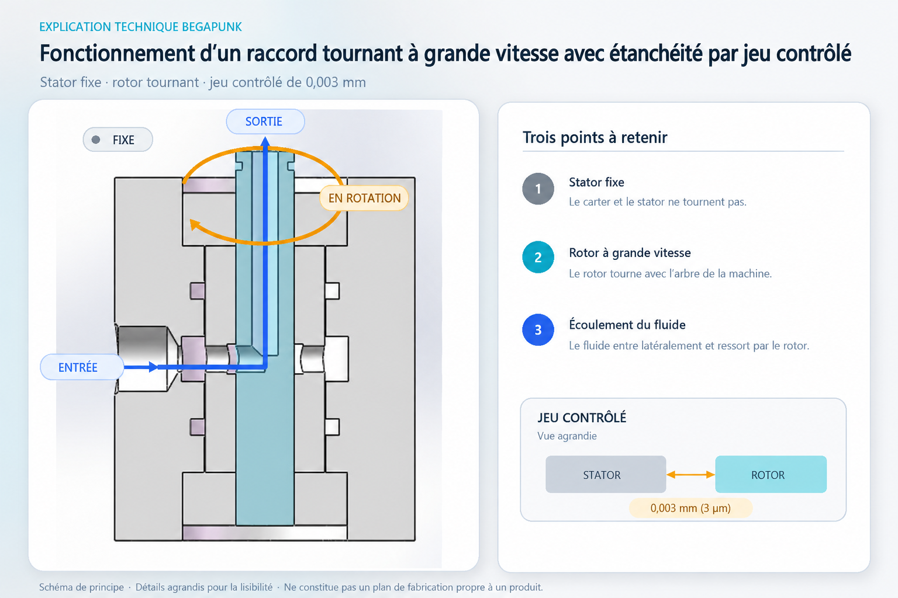

Réponse directe : dans la conception illustrée ici, le stator extérieur reste fixe tandis que le rotor central tourne à grande vitesse. Le fluide entre par l’orifice latéral, rejoint un passage radial dans le rotor, puis remonte dans son canal axial. Un jeu radial unilatéral de 0,003 mm, maintenu de manière contrôlée entre le stator d’étanchéité et le rotor, limite les fuites de dérivation sans créer de contact glissant à cette interface.
Ce principe peut réduire le frottement et l’usure à l’interface d’étanchéité rotative. En contrepartie, la précision, la propreté, l’alignement, le guidage par roulements, la pression, la température et le niveau de fuite admissible deviennent des paramètres essentiels de l’étude. L’illustration présente un principe de conception ; elle ne signifie pas que tous les raccords tournants Begapunk ont la même architecture interne.

Ce que montre le schéma
- Stator extérieur fixe : le corps principal reste immobile par rapport à l’alimentation en fluide.
- Stator d’étanchéité fixe : cette surface de précision entoure le rotor sans tourner avec lui.
- Rotor à grande vitesse : la pièce centrale en cyan tourne avec la machine et contient le passage interne du fluide.
- Roulements : ils guident et positionnent le rotor pour qu’il tourne autour de l’axe prévu.
- Joints statiques : ils limitent les fuites aux assemblages fixes. Ils ne constituent pas l’interface d’étanchéité dynamique entre rotor et stator matérialisée par le jeu radial de 0,003 mm.
Passage du fluide de la partie fixe au rotor
Étape 1 — Entrée latérale
Le fluide entre par l’orifice situé du côté fixe du corps. La conduite d’alimentation n’a donc pas à tourner avec la machine.
Étape 2 — Transfert radial
Le fluide passe radialement de la zone d’entrée fixe au passage du rotor. Le jeu de précision limite l’écoulement indésirable entre les surfaces fixe et tournante, tout en permettant au rotor de tourner sans frotter contre le stator d’étanchéité.
Étape 3 — Sortie axiale
Le fluide est ensuite dirigé vers le canal axial du rotor et ressort vers l’équipement en rotation. Le transfert peut ainsi rester continu sans enrouler la conduite d’alimentation externe autour de l’arbre.
Le schéma illustre le principe d’un seul circuit. Un raccord tournant multicircuit nécessite des chemins d’écoulement indépendants et une isolation adaptée entre eux. Le nombre de circuits, l’affectation des orifices, la pression, le fluide et le montage doivent être confirmés pour la machine concernée.
Pourquoi choisir un jeu sans contact plutôt qu’un joint frottant ?
Un joint de contact classique forme une barrière en appliquant un élément d’étanchéité contre une surface mobile. Cette solution peut assurer une bonne maîtrise des fuites, mais le mouvement relatif engendre aussi frottement, échauffement et usure. Le résultat dépend notamment du matériau du joint, de l’état de surface, de la lubrification, de la pression, de la température, de la vitesse de glissement et du cycle de service.
Une étanchéité sans contact par jeu contrôlé repose sur un compromis différent : les surfaces fixe et tournante sont séparées par un très faible espace calculé. Puisqu’elles ne frottent pas l’une contre l’autre à cette interface, celle-ci ne subit normalement pas l’usure liée au contact glissant. Ce principe peut être utile lorsque la vitesse de rotation rend le frottement et l’échauffement difficiles à maîtriser.
Limite importante : « Sans contact » ne signifie pas « zéro fuite ». Une étanchéité par jeu limite l’écoulement dans une restriction contrôlée ; elle ne crée pas une barrière hermétique. La fuite réelle dépend de la géométrie et de la longueur du jeu, de la différence de pression, des propriétés du fluide, de la température, de la position du rotor et de l’ensemble de la conception interne.
Que signifie un jeu radial unilatéral de 0,003 mm ?
Il s’agit, dans la conception illustrée, de la distance radiale mesurée d’un seul côté entre la surface d’étanchéité fixe et le rotor en rotation. Ce n’est pas le jeu diamétral total.
L’ensemble tournant doit conserver cette séparation pendant le montage et le fonctionnement. Il faut notamment tenir compte de la concentricité du rotor et du stator, de la précision et du jeu interne des roulements, du faux-rond du rotor et de la flexion de l’arbre, de la géométrie d’usinage et de l’état de surface, de l’alignement au montage, de la dilatation thermique, des déformations élastiques, de la contamination, des vibrations et des efforts transmis par les conduites externes.
Si le jeu en fonctionnement augmente
La fuite de dérivation peut augmenter, selon la pression, le fluide, la température et l’ensemble de la géométrie.
Si le jeu en fonctionnement diminue
Le rotor et le stator peuvent entrer en contact, avec un risque d’échauffement, de rayures, de particules, de couple instable ou d’endommagement des surfaces de précision.
Le jeu radial nominal n’est donc qu’un élément de la conception. La chaîne de tolérances et les conditions de fonctionnement prévues sont tout aussi importantes.
Pourquoi les roulements influencent-ils l’étanchéité ?
Les roulements ne servent pas uniquement à permettre la rotation : ils définissent aussi la position du rotor par rapport à la surface d’étanchéité fixe. Pour qu’un faible jeu sans contact fonctionne, le rotor doit rester proche de son axe théorique.
Le choix et l’ajustement des roulements, leur jeu interne ou leur précharge, la lubrification, la précision du montage, la température et la maîtrise des charges externes peuvent tous modifier la position du rotor. Une géométrie d’étanchéité précise ne peut pas compenser un ensemble tournant mal aligné ou soumis latéralement à des efforts de machine non repris.
Un raccord tournant ne doit donc pas servir de palier radial ou axial principal de la machine, sauf si le plan approuvé lui attribue explicitement cette fonction. Les flexibles et les conduites externes doivent eux aussi être acheminés et soutenus de façon à ne pas exercer d’efforts parasites sur le raccord tournant.
Le compromis principal : maîtrise des fuites et jeu de fonctionnement
Un jeu plus faible peut mieux restreindre le débit de dérivation, mais réduit aussi la marge disponible pour le faux-rond, la dilatation thermique, les déformations, la contamination et les variations d’assemblage. Un jeu plus grand augmente la séparation mécanique, mais laisse normalement passer davantage de débit de dérivation.
La bonne conception n’est pas simplement celle qui emploie « le plus petit jeu possible ». Le jeu doit rester sûr et prévisible sur toute la plage approuvée de pression, de vitesse, de température, de fluide, de cycle de service et de dispersion de fabrication, tout en respectant l’exigence de fuite du projet.
Une étanchéité par jeu destinée à la grande vitesse ne doit pas être choisie sur le seul critère de la vitesse de rotation. L’étude technique doit porter sur les conditions combinées : une pression maximale et une vitesse maximale publiées séparément ne sont pas nécessairement admissibles simultanément.
Dans quels cas ce principe peut-il être utile ?
Un raccord tournant à étanchéité sans contact par jeu contrôlé peut être envisagé lorsqu’une application exige un transfert continu de fluide à des vitesses où le frottement, l’échauffement du joint ou l’usure de contact deviennent des contraintes importantes.
Son adéquation dépend néanmoins des conditions réelles. Cette architecture peut être inadaptée si l’application exige une fuite quasi nulle, si le fluide est sale ou chargé de particules, si l’arbre se déplace fortement, si la température varie sans maîtrise ou si la précision requise des roulements et de l’alignement ne peut être maintenue. Dans ces cas, un joint de contact, une autre géométrie sans contact, une filtration supplémentaire, un chemin de drainage contrôlé ou une autre architecture de transfert rotatif peuvent être plus appropriés.
Aucun principe d’étanchéité n’est optimal pour toutes les machines.
Informations nécessaires avant la sélection
- Fluide transféré et composition
- Nombre de circuits indépendants
- Pression de service normale et maximale
- Vitesse de rotation continue et maximale
- Température du fluide et température ambiante
- Cycle de service et type de mouvement prévus
- Fuite externe et fuite entre circuits admissibles
- Débit requis ou perte de charge admissible
- Encombrement disponible pour l’installation
- Exigences relatives aux orifices côté fixe et côté tournant
- Configuration de l’arbre, du montage et de l’anti-rotation
- Plan de la machine ou modèle d’interface disponible
- Conditions de propreté, de filtration et de maintenance
Ces données permettent d’évaluer si une étanchéité par jeu est adaptée et si les performances demandées peuvent être maintenues sur toute la plage de fonctionnement.
Questions fréquentes
Le rotor touche-t-il le stator de l’étanchéité sans contact ?
Non, dans les conditions de fonctionnement prévues. Les variations de fabrication, le faux-rond, la dilatation thermique, la contamination et les charges externes doivent être maîtrisés afin de conserver le jeu radial unilatéral prévu de 0,003 mm.
Une étanchéité sans contact par jeu contrôlé garantit-elle une fuite nulle ?
Non. Elle réduit le débit de dérivation grâce à un jeu étroit et maîtrisé, mais ne doit pas être qualifiée d’hermétique ou de « zéro fuite » sans résultats d’essais propres à l’application.
Pourquoi ce principe peut-il convenir à une rotation à grande vitesse ?
En fonctionnement normal, l’interface de jeu ne présente aucun contact glissant ; elle évite donc le frottement et l’usure d’un joint dynamique frottant. Les roulements et les autres composants conservent toutefois leurs propres limites de vitesse, de lubrification, de température et de durée de vie.
Un jeu radial de 0,003 mm convient-il à tous les fluides et à toutes les pressions ?
Non. La viscosité et la propreté du fluide, la différence de pression, la température, le débit requis, la fuite admissible, le comportement des roulements et l’ensemble de la géométrie interne doivent être étudiés conjointement.
Ce schéma peut-il servir de plan de fabrication ?
Non. Il s’agit d’une vue en coupe conceptuelle destinée à expliquer le principe de fonctionnement. Les dimensions, tolérances, matériaux, interfaces, conditions d’essai et critères d’acceptation doivent être définis dans le plan et l’accord technique propres au projet.
Du principe de fonctionnement à la sélection du produit
Indiquez le fluide, la pression, la vitesse, la température, le nombre de circuits, l’exigence de fuite, l’espace disponible et, si possible, le plan de la machine. Begapunk pourra déterminer si une étanchéité sans contact par jeu contrôlé ou une autre conception de raccord tournant constitue la solution technique la plus sûre pour l’application.